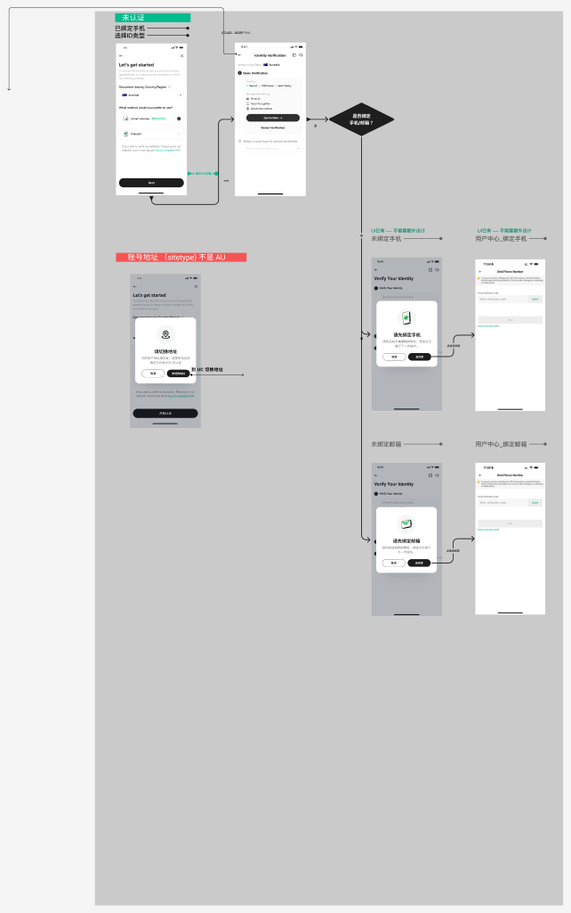
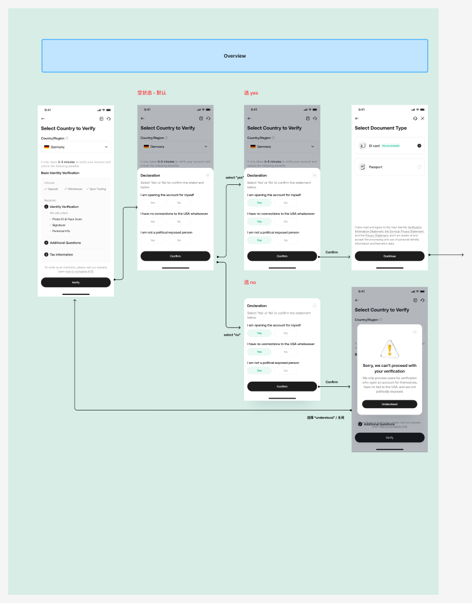
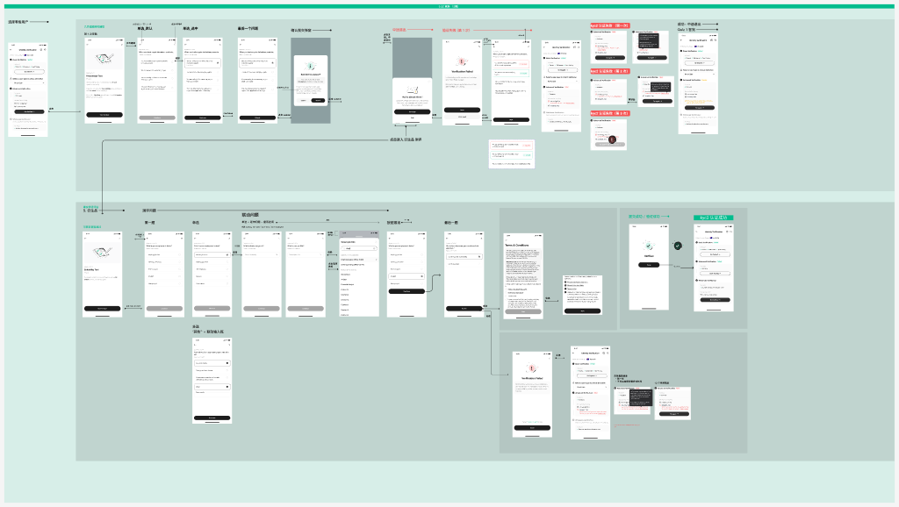
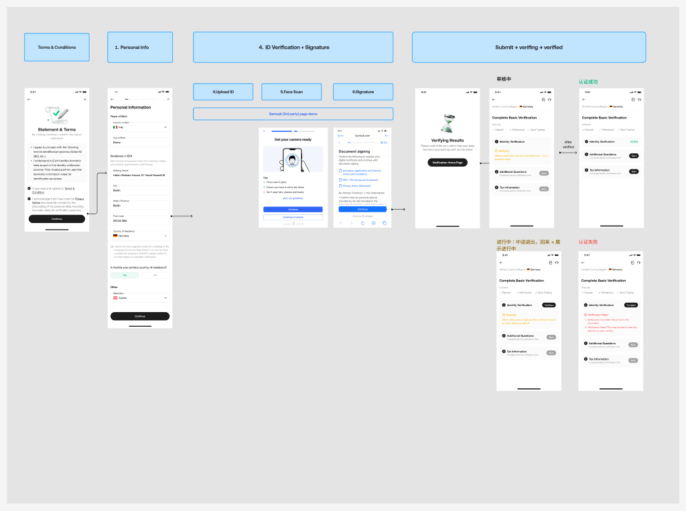
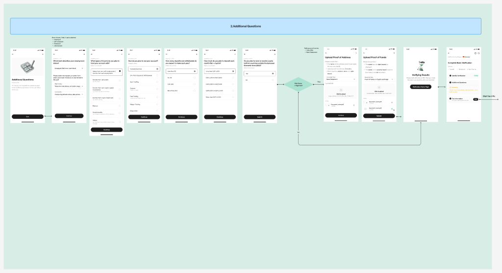
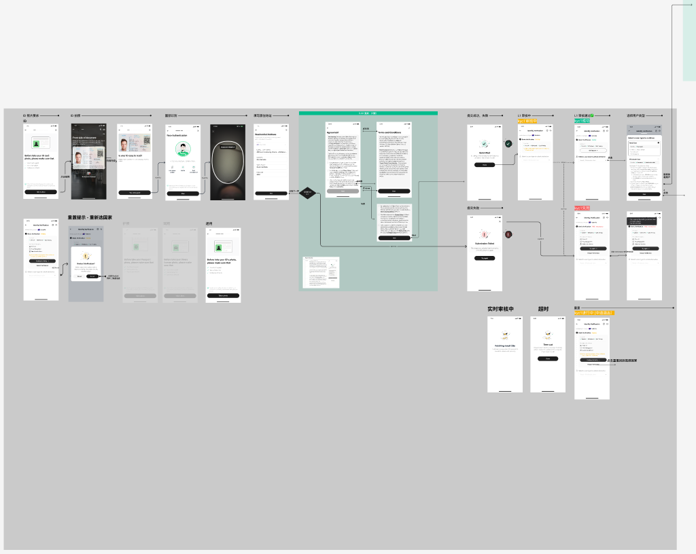
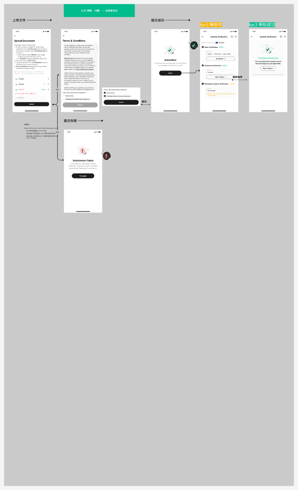
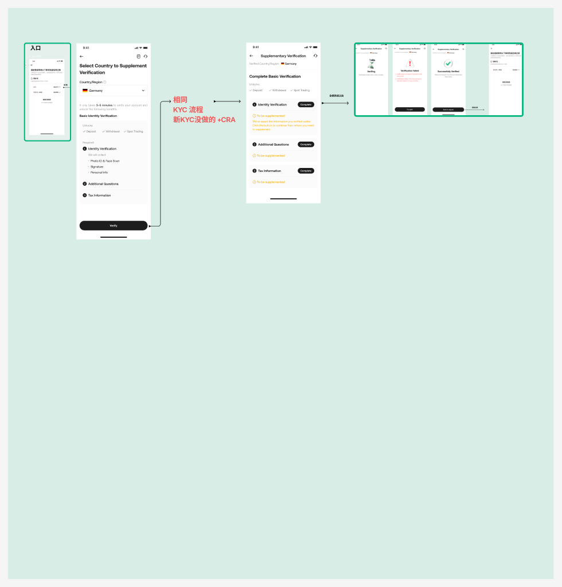

Context & Stakes
Designs that went into a regulatory filing
Avenir Group needed to launch regulated crypto exchange operations in Australia and the European Union — two markets with different KYC regimes, different user bases, and different definitions of what "verified" even means.
This wasn't purely a UX project. The compliance team presented these designs as part of the regulatory submission process. Both entities subsequently received their operating licenses — the Australian exchange under AUSTRAC registration, and the EU entity as a MiCA-compliant CASP (Crypto Asset Service Provider).
· Timeline: ~3 weeks per MVP, running in parallel
· My role: Sole UX/UI designer for the AU and EU flows; collaborated with one designer on global KYC flow
· Collaborators: Compliance officer (ongoing review), Product Manager, Engineering, Legal
· Constraint: Requirements shifted multiple times as the compliance team negotiated with regulators — the design had to be adaptable without losing structural coherence

Two regulatory frameworks, two different design problems
AUSTRAC (Australia) and MiCA (EU) share the same intent — know your customer — but the design implications are very different.
Australia (AUSTRAC + ASIC)
· Customer identification: Standard name, DOB, address, government ID — but the classification of retail vs wholesale investor changes what they can access.
· Derivatives access: ASIC's Product Intervention Order (PIO) for CFDs requires a mandatory suitability assessment before any retail user can access futures or leveraged products. This quiz spans topics including leverage, margin, CFD mechanics, and Australian-specific regulations (negative balance protection, ASIC PIO rules, segregated client money). It cannot be skipped or simplified — the questions are legally defined.
· Key UX tension: The assessment contains difficult, legally specified questions. Making them feel approachable without dumbing them down or coaching users toward "correct" answers.
Europe (MiCA)
· Identity verification: Similar base requirements but MiCA adds mandatory PEP and sanctions screening and a more structured investor risk classification.
· Source of funds: Required at lower thresholds than AU for certain transaction types.
· Risk disclosure obligations: MiCA mandates specific risk warnings be presented before key actions — these had to be designed as real user touchpoints, not legal footnotes.
· Key UX tension: Risk disclosures that satisfy regulators but don't feel like dark patterns or friction-for-friction's-sake.

Working with compliance: design reviews as a regulatory tool
Most UX projects involve stakeholder reviews. This project involved compliance reviews where the output of those reviews was documentation submitted to a regulator.
How the collaboration worked
· Ongoing review sessions with the compliance officer — not at the end of each sprint, but continuously. Any screen that touched a regulatory requirement was walked through before going to engineering.
· Requirement changes happened three times during the AU flow, twice during EU — each time the regulator updated their interpretation of the framework. I maintained a modular flow structure so we could swap individual screens without rebuilding the entire flow.
· Annotation for compliance: Figma flows were annotated with the specific regulatory clause each design decision mapped to — making the compliance team's job of writing the submission easier and reducing back-and-forth.

Key decision: the ASIC investor assessment
The Australian flow includes a legally mandated suitability quiz that retail users must complete before accessing derivatives trading. ASIC specifies the topic areas; the questions themselves are legally defined and cannot be paraphrased or omitted.
The design problem
The quiz covers five topic areas (investor familiarity, trading strategies, leverage/margin, CFD mechanics, risk management) with up to 6-7 questions per topic. The language is formal and technical by legal necessity. Users who fail cannot access derivatives. Users who give up don't complete onboarding.
Three tensions to balance:
· Legal fidelity vs. readability — the question wording is fixed; only visual presentation can be varied.
· Education vs. testing — regulators want to assess genuine understanding, not guide users toward correct answers. We couldn't add tooltips or inline explanations to quiz questions.
· Completion rate vs. compliance integrity — reducing friction was desirable, but not at the cost of the assessment's legal validity.
Solution
· Crypto guide before the quiz (inspired by Coinbase's pattern): A structured educational module covering the key concepts — presented before entering the assessment, not during it. Users who engage with the guide have the knowledge; those who skip still face a valid assessment. This preserved regulatory integrity while reducing cold-start confusion.
· Progress clarity: Topic-by-topic progress indicator so users understood the scope upfront rather than discovering additional questions mid-flow.
· Attempt management: Users who fail get a clear explanation of which topics they fell short on, with guidance to review the crypto guide before retrying. This satisfies ASIC's requirement for a genuine assessment while reducing user frustration.



Same user goal, different regulatory paths
A user wanting to verify and trade has the same mental model in Sydney and Berlin. The regulatory structure they move through is fundamentally different. The design challenge was building flows that felt coherent to users while satisfying two very different regulatory requirements.
Where the flows diverge
· Document requirements: AUSTRAC accepts a broader set of government-issued IDs; MiCA has stricter document freshness and certification requirements in some cases.
· Investor classification: AU has a binary retail/wholesale split gated by the full ASIC assessment. EU has a tiered classification with different access levels based on MiCA categories.
· Risk disclosures: In the AU flow, risk disclosures are embedded at the derivatives access gate. In the EU flow, MiCA requires risk acknowledgments at multiple earlier touchpoints — meaning EU users encounter more explicit friction earlier in the flow.
· Source of funds: Triggered at different thresholds. The UI had to present this as a natural step rather than an accusatory one.


Flow overview
Australia — AUSTRAC + ASIC
Basic identity → Government ID verification → Investor classification (ASIC assessment + crypto guide) → Derivatives access or spot-only restriction



Europe — MiCA CASP
Basic identity → Document verification → PEP/sanctions screening → Risk disclosure acceptance → Investor classification → Source of funds (threshold-triggered) → Tiered access
Migration: moving existing users to the EU entity
Launching a new regulated entity meant existing exchange users who wanted EU access needed to be migrated — not just given a new account, but re-verified under the new MiCA requirements while preserving as much of their existing verification status as possible.
The design challenge
· State mapping: Existing users had different levels of verification (basic vs. fully verified). The design had to handle multiple starting states and route each user to the minimum additional verification needed under MiCA — not restart everyone from zero.
· Communication UX: Users needed to understand why they were being asked to verify again and what would happen if they didn't. This required careful writing — too alarming and users abandon; too casual and they ignore it.
· Partial completion handling: A user who starts migration and doesn't finish is in a liminal state across two entities. The design had to make that state recoverable and transparent.

Final designs
Australia
Europe
Impact & outcome
Regulatory outcome
· AUSTRAC registration confirmed for the Australian entity. The compliance team used the annotated design flows in their submission documentation.
· MiCA CASP license obtained for the EU entity. The EU KYC design was reviewed and approved by the compliance officer prior to submission.
· Both markets launched on the planned schedule despite requirement changes mid-design.
Design outcome
· The jurisdiction-template structure — where the core flow is shared and jurisdiction-specific requirements are modular — was reused as the foundation for subsequent regional rollouts.
· The crypto guide pattern (educational module before the ASIC assessment) was validated by compliance as not constituting coaching — and was kept as a user experience feature.
· Requirement changes during the process were absorbed without full redesigns because of the modular flow structure. The last-minute ASIC clarification (week 3) required changing two screens rather than rebuilding the assessment section.
What I'd do differently
The AU and EU designs were developed largely in parallel by different designers with coordination from me. In hindsight, establishing the jurisdiction-template structure at the start (rather than recognising the pattern partway through) would have reduced duplication. The migration flow was also scoped late — it would have benefited from being designed alongside the main flows rather than as a follow-on.